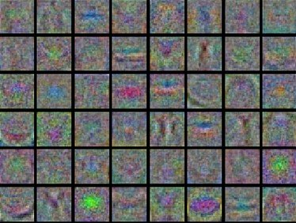
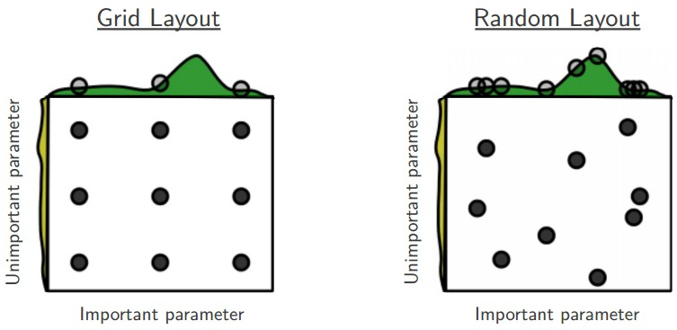

Learning and Evaluation
目录
cs231n-learning-and-evaluation
Learning
前两部分讨论了神经网络的静态部分：怎么设置神经网络之间的链接，数据和损失函数。 本文主要讨论动态部分，即神经网络的参数学习过程和如何找寻超参。
Sanity checks
理论上讲，梯度检查只需要简单比较一下解析梯度和数值梯度即可。实际应用中，该过程 需要仔细设计，并且非常容易出错。如下为一些需要关注的建议、小技巧和问题：
Use the centered formula 数值梯度计算近似公式如下： $$\frac{df(x)}{dx} = \frac{f(x + h) - f(x)}{h} \hspace{0.1in} \text{(bad, do not use)}$$
其中， \(h\) 是一个非常小的数，常常设置为 1e-5。实际应用中，使用如下基于中心的数 值梯度计算公式： $$\frac{df(x)}{dx} = \frac{f(x + h) - f(x - h)}{2h} \hspace{0.1in} \text{(use instead)}$$
该公式需要计算两次损失函数(计算量会增加两倍)，但是实际情况中，该公式计算的数值 梯度更为精准。对上述公式 \(f(x+h) f(x-h)\) 进行泰勒展开，可以发现第一个公式的差 值在 \(O(h)\) ，第二个公式的差值在 \(O(h^2)\) (二次近似)。
Use relative error for the comparison 那么如何比较数值梯度 \(f’_n\) 和解析梯度 \(f’_a\) ？如何定义两个梯度值不一致呢？简单的做法是直接比较差值的绝对值是否大于 一定的阈值。 这是错误的 ！例如，考虑两个梯度的差值为 1e-4，看起来当梯度为 1.0 的时候是一个可以接受的差值。那么如果两个梯度本身就是差不多 1e-5 或者更低，那么 1e-4 就是一个非常大的差值。所以一般比较的是相对差值： $$\frac{\mid f'_a - f'_n \mid}{\max(\mid f'_a \mid, \mid f'_n \mid)}$$
在 Relu 作为激活函数的时候，小额外小心另个梯度都是零的情况。此外：
- 相对差值大于 1e-2 常常认为是错误的
- 1e-1 > 相对差值 > 1e-4 也应该认真的检查是否计算错误
- 1e-4 > 相对差值在使用颈向类的目标函数时候可以认为是正确的，但是需要没有(tanh 作为激活，softmax 作为损失函数)时候认为 1e-4 有点高
- 1e-7 就可以认为是正确的
额外随着网络变得越深，相对错误变得越大。如果有 10 层网络，那么相对差值在 1e-2 也可 以认为是正确的。但是单层的梯度差值为 1e-2 则是错误的。
Use double precision 另外一个常见的错误，是在做梯度检查的时候使用单精度。这 样容易得到更高的梯度差值。使用双精度后，可以可以使差值从 1e-2 降到 1e-8.
Stick around active range of floating point What Every Computer Scientise Should Know About Floating-Point Arithmetic 包含了很多浮点运算的细节，能够让你 了解浮点的工作原理，从而可以快速定位一些精度计算的问题。
Kinks in the objective 另外一个梯度检测中差值较大的时候是采取了颈向(kinks)函数。颈 向指目标函数中不可导部分，例如 Relu(max(0,x)) ,或者是 SVMLoss，Maxout 神经 元等。例如，在检查一个 ReLU 函数， \(x=-1e6\) 。其中 \(x<0\) ，解析梯度在该点为 0。然而数值梯度有可能在计算时候， \(f(x+h)\) 有可能跨过 0 点这个颈向(当 \(h>1e-6\))，从而使得数值梯度不为 0。而且这种情况比较常见。
所以需要知道这些颈向跨越发生的时候，可以通过正向传播记录 \(max(x,y)\) 的胜利者， 一旦在计算数值梯度 \(f(x+h)-f(x-h)\) 的时候，胜利者发生改变，那么就认为颈向跨越 发生，数值梯度就不是很准确。
Use only few datapoints 在使用包含颈向的激活函数或者损失函数的网络时候，可以 通过降低一次训练的样本数量，从而降低一次训练时候包含的颈向函数数量，从而减低颈 向跨越的概率。
Be careful with the step size h 学习步长并不是越小越好。太小容易遇到数值精度 问题。有时候，梯度检查不正确的时候，很有可能将学习步长提高到 1e-4 或者 1e-6 的时候， 梯度检查会突然正常。wikipedia article讲解了步长和数值梯度差值之间的关系。
Gradcheck during a "characteristic" mode operation 需要认识到梯度检查只是在 参数空间中的一个单独的点附近。即使梯度检查在该点是正确的，也不代表梯度在全局实 现上是正确的。另外，一个随机初始化的权值矩阵在最开始做的梯度检查是非常没有代表 性的，并且很可能带来病态问题，即梯度检查看起来是正确实现的，但是其实并不是。例 如：在 SVMLoss 在权值很小的时候，会对所有的点输出得分等于 0，对于所有的数据点 的梯度近乎相同。一个不正确的实现依然可能通过梯度检查，但是在更复杂或者得分分布 不均的时候会出现错误。因此，正确的梯度检查做法是网络可以在整体损失开始下降的时 候进行梯度检查，如果直接从最开始就执行几轮梯度检查，有可能无法发现梯度实现的错 误。
Don't let the regularization overwhelm the data 损失函数一般由数据损失和正则 损失组成。一个容易出现的问题是正则损失可能变得比数据损失影响更大，这样梯度更新 中正则损失带来的影响变成主要因素。一般做法是先不使用正则损失，单独使用数据损失， 然后再调整正则损失。通过一点一点调整正则损失系数，并观察梯度检测，保证正则损失 带来的梯度更新不会影响数据损失。
Remember to turn off dropout/augmentations 在做梯度检测时候，先去掉网络中非 决定性的部分，例如 dropout，random data augmentations。
Check only few dimensions 实际应用中，网络具有很多参数，在作梯度检测，可以只 针对一些参数。需要注意的是，应该对不同部分的参数都检测几个参数。例如：每一层的 权值检查几个和 bias 需要检查。
Before learning: sanity checks Tops/Tricks
- Look for correct loss at chance performance 首先确定一下参数较少的时候，损失 函数的值在最开始是对的，例如在 CIFAR-10 训练一个 Softmax 分类器，在最开始的损失值 应该接近 2.302，因为每一类的大概概率为 0.1（10 分类），由于 Softmax 损失是正确分 类概率对数的负值： \(-ln(0.1)=2.30.2\) 。面对 SVM 损失，由于没有分类正确，所以结果 应该在 9 范围。如果不是，那么就可能是权值初始化有问题。
- 增加正则损失，会使得损失值增加
- Overfit a tiny subset of data 首先在一个小数据集(20 样本)上进行训练，并且能 够达到 0 损失值。即使获得了损失为 0，也有可能实现的不正确。
Babysitting the learning process
在训练神经网络的过程中，有很多指标值需要监控。并且可以通过对这些指标画图，从而可 以直观的观察不同的设置对指标的影响，从而影响整体学习效率。
如下图 x 轴是数据训练第几轮(epochs 一个 epoch 表示每个样本被学习一遍)，用来说 明每个样本在训练过程中学习了几次。
Loss functions
第一个指标是损失值，在每次迭代学习完成后计算。下图是损失值的图示：


左图：显示不同学习率对损失值的影响。低学习率，损失值线性下降；高学习率会带来指数 级下降。更高的学习率有可能带来损失值的升高。
右图：为在 CIFAR-10 训练的小规模网络的损失值。可以看出来学习率有点小，并且 batch-size 太小了，所以损失值上下波动。
损失函数的波动一般是批次大小(batch size)决定，当为 1 的时候，波动会特别高；当 为整个样本集数量，波动会变的最小。
也可以对损失值做一个对数处理，这样指数的损失值会变成直线，当过个损失函数绘制在一 个图上，看起来更直观。
更多的损失函数可以参考：http://lossfunctions.tumblr.com/
Train/Val accuracy
第二指标是准确性，包括训练集和验证集的准确性，这些指标可以用来监控学习是否过拟合 了。

图1 训练集&测试集准确性
训练集和验证集准确率之间的差值表示过拟合(overfitting)。左图显示了两个主要的情 况。蓝色线在验证集上准确性较低，和训练集的准确性对比后，具有强过拟合，这样需要加 强正则系数或者增大训练数据集。另外一种情况是验证集上准确性和训练集上准确性基本一 致，显示该模型的表达能力不高，可以使用更大的模型。
Weights: Updates ratio
最后一个指标是参数更新的大小和对应参数的大小的比例。更新的大小不是指梯度值，而是 梯度乘以学习率。一个启发式的比率大概为 1e-3，具体实现如下：
# assume parameter vector W and its gradient vector dW param_scale = np.linalg.norm(W.ravel()) update = -learning_rate*dW # simple SGD update update_scale = np.linalg.norm(update.ravel()) W += update # the actual update print update_scale / param_scale # want ~1e-3
Activation/Gradient distributions per layer
错误的权值初始化可以减慢收敛速度或者直接使得停止收敛。可以通过监控激活函数的激活 值和梯度的直方图来监控。例如：采取 tanh 作为激活函数的网络，激活值分布在整个 [-1,+1]区间内，而不是都在 0 值，或者都在-1 +1 两个值附近。
Visualization
在处理图像相关的任务，可以通过可视化第一层：
 
神经网络的第一层权值可视化结果。左图：噪声特征，表示未收敛的网络，学习率不对，而 且正则系数太小。右图：图像较好，纹理清晰，表示学习已经收敛。
Parameter updates
一旦反向传播计算完成，梯度可以用来执行参数更新，有几种不同的方法执行参数更新。
深度网络的优化现在是一个很活跃的研究领域。在本部分，将介绍几个常用的优化算法，并 且会给出一些参考资料，可以深入学习。
First-order(SGD), momentum, Nesterov momentum
Vanilla update 最为简单的更新策略是将各个参数沿着梯度方向的反方向更新。假设参 数为 \(x\) ，梯度为 \(dx\) ，最简单的更新策略如下：
# Vanilla update x += - learning_rate * dx
learning_rate 为学习率超参。在使用整个样本集作为梯度计算的时候，需要将学习率设 置低一些，从而使得损失是向着降低方向移动。
Momentum update 是另外一种在深度学习中几乎可以保证收敛的更新策略。损失函数优化 可以看作是山峰上的石头，自己随着重力向下滚。速度会有一个累加的作用。
更新策略：
# Momentum update v = mu * v - learning_rate * dx # integrate velocity x += v # integrate position
\(v\) 变量最开始初始化为 0， \(mu\) 用来控制累加的比例，一般设置为 0.9。有点类似摩擦 系数。该变量用来对速度进行衰减。在做交叉验证实验中，一般可以使用[0.5, 0.9, 0.95, 0.99]来进行超参选择。还有一种设置方法是 \(mu\) 从开始设置为 0.5，然后经过几个 epoch 后达到 0.99。
用动能更新策略，参数向量的更新范式会在一致的更新方向上较大。
Nesterov Momentum 是另外一个版本的动能更新策略。在理论上凸函数可以收敛，并且在 实际应用中从结果来看确实要比原生的功能更新策略表现的更好。
核心思想：参数向量在位置 \(x\) ，然后首先向动能方向移动 \(x+mu*v\) ，然后计算在动能更新的位置 的梯度。该位置 \(x+mu*v\) 是我们更新后参数的近似，类似先向前看一眼，然后在该点计算 的梯度能够加速收敛。

图2 Nesterov Momentum
原始动能梯度更新由两部分组成：x 点梯度方向和动能梯度方向。其中可以认为 x 点的梯度方 向和动能梯度方向具有一定的差异，这样加和的梯度方向具有一定损失。而 Nesterov 动 能更新由：动能梯度方向和更新后的梯度方向。可以认为两个梯度更新方向更为一致，收敛 更快。
x_ahead = x + mu * v # evaluate dx_ahead (the gradient at x_ahead instead of at x) v = mu * v - learning_rate * dx_ahead x += v
以下是 Nesterov's Accelerated Momentum(NAG) 资料：
- Advances in optimizing Recurrent Networks section 3.5
- IIya Sustskever's thesis section 7.2
Annealing the learning rate
深度网络训练，对学习率实现退火算法(anneal)具有较好的作用。直觉是，当学习率较高 的时候，整个网络具有较大的能力，参数向量在不断的来回跳动，无法收敛到一个较窄的最 优化损失值里。降低学习率需要一些技巧：如果降低的过慢，浪费了大量的计算，使得损失 值来回跳动；如果减低的过快，整个系统很快就不再寻找最优值。如下是一些学习率降低的 技巧：
-
Step decay - 每个 epoch 完成后，对学习率降低一个比例。一个启发设置方法是首 先固定学习率，然后观察训练集和测试集的准确性，一旦验证集的准确 性不再提高，那么降低学习率 0.5。
-
Exponential decay - 采取公式 \(\alpha = \alpha_0 e^{-k t}\) ， \(\alpha_0,k\) 为超参， \(t\) 为迭代次数。
-
1/t decay - 采取公式 \(\alpha = \alpha_0 / (1 + k t )\) ， \(\alpha_0,k\) 为超 参， \(t\) 为迭代次数。
实际应用中， step decay 较为使用。
Second-order methods
第二类优化算法是基于牛顿法(Newton's method)，使用如下公式进行更新： $$x \leftarrow x - [H f(x)]^{-1} \nabla f(x)$$
\(Hf(x)\) 是Hessian matrix，是函数的二次方梯度矩阵。 \(\nabla f(x)\) 为梯度向量。 Hessian matrix 描述了损失函数的曲率，可用来执行一个更有效的更新。
虽然更新更为有效，但是由于在深度学习中，Hessian 矩阵的求解需要大量的计算量和存储 空间，并不具有实用性。很多模拟牛顿法的方法提出来计算近似的 Hessian 逆矩阵。这些 方法中最流行的是L-BFGS，使用历史梯度信息来拟合近似矩阵。
In practice 现在 L-BFGS 和类似的二次梯度方法在深度学习领域基本已不再适用。相反 SGD 现在是用的比较多的，因为简单和可扩展。
参考资料：
- Large Scale Distributed Deep Networks L-BFGS 和 SGD 在大规模分布式优化中对比
- SFO 算法结合 L-BGGS 和 SGD 两个方法的优点
Per-parameter adaptive learning rate(Adagrad, RMSProp)
前面讨论的方法都是基于全局一个学习率。现在很多方法都是基于每个参数来独立调整学习 率。这些方法也需要一些超参，但是超参的选择具有很大的可适范围，使得学习收敛较大； 而学习率的设置则要小心很多。
Adagrad Adaptive Subgradient Methods for Online Learning and Stochastic Optimization
# Assume the gradient dx and parameter vector x cache += dx**2 x += - learning_rate * dx / (np.sqrt(cache) + eps)
cache 记录了每个参数的梯度的开方加和。该值用来调整每个参数的学习步长。可以看出 来，梯度较大的参数，会降低学习率；梯度较小的，会提升学习率。有趣的是，开方和求根 非常重要，如果没有这两个操作，整个算法表现非常差。平滑项 eps 一般设置为 1e-4 到 1e-8，用来避免除 0.该方法的一个缺点是深度学习中，学习率单调减低太激进，整个学 习过程容易过早停止。
RMSprop 是一个非常有效，但是没有正式发表过的学习率调整方法。现在使用该方法的论 文都直接引用slide 29 of Lecture 6 of Geoff Hinton's Coursera class。 RMSprop 更新策略调整了 Adagrad 方法从而降低学习率的降低太过激进的问题。针对梯度范式加 和进行衰减：
cache = decay_rate * cache + (1 - decay_rate) * dx**2 x += - learning_rate * dx / (np.sqrt(cache) + eps)
decay_rate 是一个超参，基本值为[0.9, 0.99, 0.999]。可以看到 cache 会随着 dx 的 降低，而变小。从而避免学习率的单调递减。
Adam 是 RMSprop 和 动能的结合，更新策略：
m = beta1*m + (1-beta1)*dx v = beta2*v + (1-beta2)*(dx**2) x += - learning_rate * m / (np.sqrt(v) + eps)
m 为梯度向量的动能表示。论文中推荐的超参为 eps=1e-8,beta1=0.9,beta2=0.999 。 Adam 方法现在是默认算法，对比 RMSprop 表现稍好一些。 Adam 有一个 bias correction 机制来补偿在最开始时 m,v 都初始化为 0 时的动能：
# t is your iteration counter going from 1 to infinity m = beta1*m + (1-beta1)*dx mt = m / (1-beta1**t) v = beta2*v + (1-beta2)*(dx**2) vt = v / (1-beta2**t) x += - learning_rate * mt / (np.sqrt(vt) + eps)
Unit Tests for Stochastic Optimization 研究了一系列随机优化方法。


上图用来帮助理解动态学习过程。左图：损失函数的等高线，评估各种优化方法的效率。可 以看到动能优化方法有跑过的情况，和物理现象一致。右图：为马鞍图的学习过程。
Hyperparameter Optimization
可以看到在训练神经网络的时候，会有很多超参的设置，最常用的超参如下：
- 初始学习率
- 学习率衰减策略
- 正则化系数
这里还有很多其他的不是特别重要的超参，例如在每个参数的可调整学习率方法中，动能的 衰减等。本文，将描述其他的一些超参选择：
Implementation 大规模神经网络一般需要很长的时间去训练，所以再加上超参的选择需 要更长的时间。这会直接影响代码的实现。一个方法是，采用一个 worker 从超参集中随 机采样，然后执行优化。在训练过程中， worker 会在每次 epoch 完成之后监控验证集的 表现，然后保存一个模型的 checkpoint (用来保存模型训练过程中的一些统计信息，例 如损失)。常常文件名直接包含了验证集变现的，后续可以直接排序选择。一般还有另外一 个程序 master ，用来加载和停止 workers ，检查生成的 checkpoints 或者画出一些 训练的统计信息。
Prefer one validation fold to cross-validation 在大多数情况下，如果验证集具有 合适的数据样本，可以不采用交叉验证。
Hyperparameter ranges 在指数上进行参数选择。例如，学习率的选择后续集为 learning_rate = 10 ** uniform(-6,1) 。可以看到随机生成一些数，然后以 10 的指数作 为学习率。直觉上，学习率和正则系数在训练上具有乘的作用，如果加上一个固定的值 0.01， 在学习率为 0.001 的时候具有很大的作用；而在学习率为 1.0 时候，作用就没有那么大。 因此，很自然的可以认为学习率的范围应该是乘以或者除以一些数来获取。
Prefer random search to grid search Random Search for Hyter-Parameter Optimization 提出随机生成超参然后验证，要比根据网格(grid)来作验证要有效，并且更 容易实现。

图3 超参网格选择
有一些超参重要于其他一些超参，随机选择可以更容易发现好的参数。
Careful with best values on border 有时候，超参的选择范围有可能不包括好的参数。 例如，如果学习率选择范围为 learning_rate = 10 ** uniform(-6,1) 。 最后，要额外 检查以下最优学习率不要在这个范围的边界，如果在边界上，有可能错过最优的学习率设置， 最好的方法是再重新选择学率范围。
Stage your search from coarse to fine 刚开始可以先从粗力度的范围开始搜索，然后 根据选择的最优参数，细化参数范围搜索。并且可以最开始可以只经过一个 epoch，或者更 少来进行粗力度的参数选择。然后随着参数的范围减小，训练时间可以加长。
Bayesian Hyperparameter Optimization 可以通过引入 bayesian 算法来指导更有效 的超参选择。核心思想是平衡勘探-开发(exploration-exploitation)。有很多开发库 (spearmint,SMAC,hyperpot)来实现参数选择。但是实际应用中，在卷积网络中，随机搜索 还是较好的方法。其他还有一些讨论。
Evaluation
Model Ensembles
在实际应用中，通过训练多个神经网络，然后在测试阶段对得分求平均可以提高一点模型的 表现。当越多的模型一起使用，最终的模型表现会提升。并且多种不同的模型集成在一起使 用，变现可以提升的更多。
-
Same model, different initializations - 使用交叉验证来搜索最好的超参，然后 使用超参训练多个使用不同初始值的模型。缺点是模型的不同只和初始化权重有关。
-
Top models discovered during cross-validation - 使用交叉验证来搜索超参过程 中，选取最好的几个(例如 10)模型集成使用，该方法的好处是不需要额外的计算量。
-
Different checkpoints of a single model - 如果训练非常困难，可以通过集成多 个 checkpoint 的模型来达到表现的提升。该方法的好处也是不需要额外的计算量。
-
Running average of parameters during training - 类似多个 checkpoint 组成的模 型原理。可以在训练神经网络的时候，保存另外一个神经网络，该神经网络的权值是 根据训练的神经网络的最后几轮权值的衰减加和得到的。这样获取的模型就是训练的 最后几轮的模型的平均。该平滑版本的模型一般在验证集上都表现的更好。可以认为 最后几轮的训练模型的损失值都在最优值的附近跳动，然后通过加和平均，能够增大 跳进最优值的机会。
模型集成的缺点是需要在测试集上花费更长的时间验证。如果有兴趣可以阅读 Dark Knowledge ，将集成模型根据对数似然值蒸馏(distill)成一个单一模型。
Summary
训练神经网络：
- 在小的数据集上执行梯度检测，避免一些梯度检测的陷阱
- 在模型训练开始时刻，先检查一下初始损失值，并且在一个小数据集上训练一个网络达到 100% 训练精度。
- 在训练阶段，监控损失函数，训练集/测试集的准确性，检查参数更新的比例(一般为 1e-3)。
- 优化策略优先使用：SGD+Nesterov Momentum 或者 Adam。
- 根据训练迭代次数，进行学习率的衰减。
- 使用随机参数搜索。从粗力度搜索开始，随着力度的细化，迭代次数增长。
- 模型集成，获取更好的效果